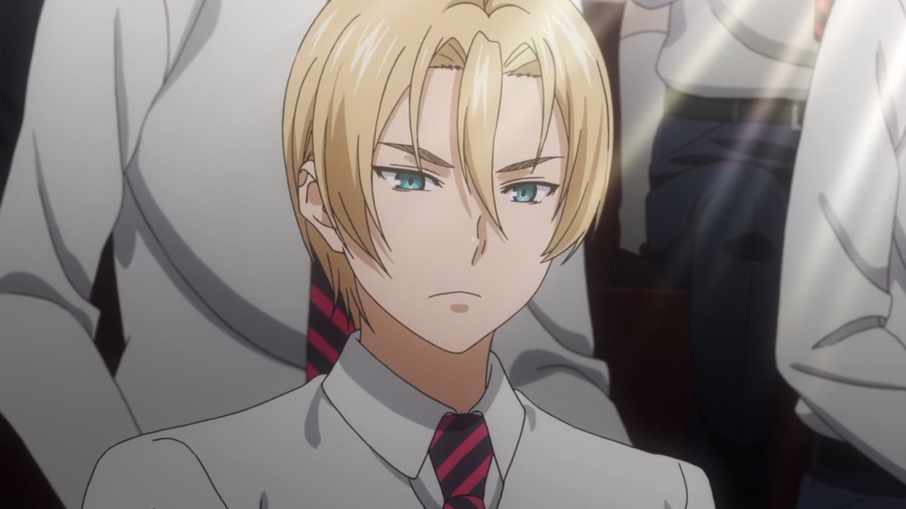

Takumi Aldini
About Takumi Aldini:
Takumi Aldini is the current 7th seat in the Totsuki Council of 10.
Hailing from Italy, Takumi is the self-proclaimed rival of Sōma Yukihira.
Takumi Aldini is a 92nd Totsuki Generation student and the elder twin brother of
Isami Aldini.
Characteristics about Takumi Aldini:
Takumi has blue eyes and short blonde hair with a fringe that parts to both sides
and one long bang in between the two.
Takumi is a hot-blooded student who holds a strong rivalry with Sōma Yukihira, though
this rivalry is somewhat one-sided with Takumi pursuing this rivalry much more intensely than Soma
Like Soma, he hails from a family owned restaurant, which he holds with pride and will
defend its name when a challenge presents itself.
Takumi hates to lose and is rather bitter in defeat, he is also easily flustered and embarrassed
when he makes a mistake or when someone glazes over his declarations.
He also speaks Italian and has his own catchphrase, "buon appetito" for someone who is going to eat
his dish and "grazie" for someone who has just finished eating his dish.